本文主要介绍私有仓库nexus的安装、配置，并介绍将项目发布到仓库中。
nexus的介绍和安装
6.1 nexus介绍
比如我们有A、B、C三个开发者在开发各自的模块，各自建立自己的私有仓库，他们都是在局域网里进行开发的。然后中央仓库是在外网，那么他们需要到中央仓库中下载的依赖速度就会很慢。现在提出这样的解决方案，就是在局域网内部建立一个私服，把所有需要到中央仓库下载的依赖都下载到私服中，每个开发者再从私服中找依赖，就会快很多：
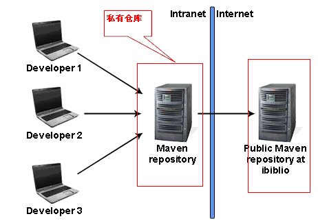
现在比较常用的私服，就是nexus，它的免费版下载地址是：
https://www.sonatype.com/download-sonatype-trial?submissionGuid=1044e344-11ba-41ea-95ae-34a1f3689082
从这里下载windows版本（其实linux下传输速度更快）
下载好以后进行解压，得到这样的两个文件夹：
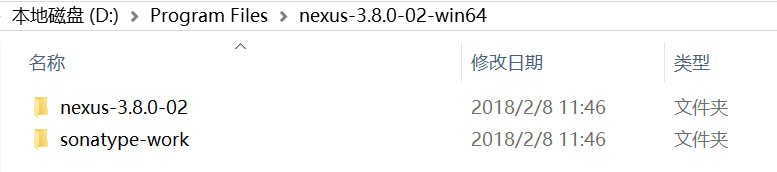
其中第一个文件夹里面存放的是一些控制文件。比如bin目录
而第二个文件夹sonatype-work里面存放的是我们从中央仓库中下载到私服的东西。
6.2 nexus安装
首先我们将bin的路径添加到环境变量path中：
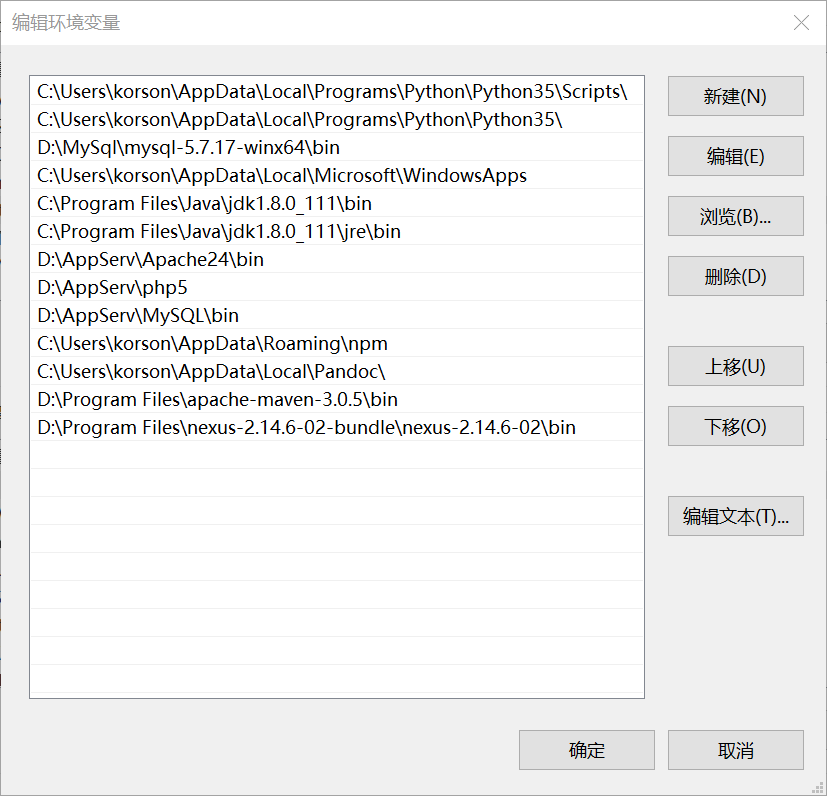
然后我们打开我们的nenux的一个配置文件：
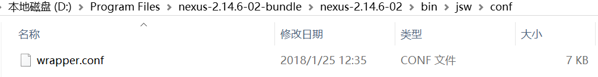
修改里面的java路径：
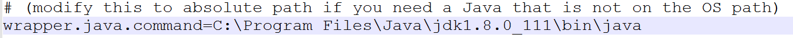
这样就把java的路径加进来了，然后我们去调用nexus install（注意cmd要在管理者模式下执行），这样就将nexus安装好了。调用nexus start启动nexus服务：
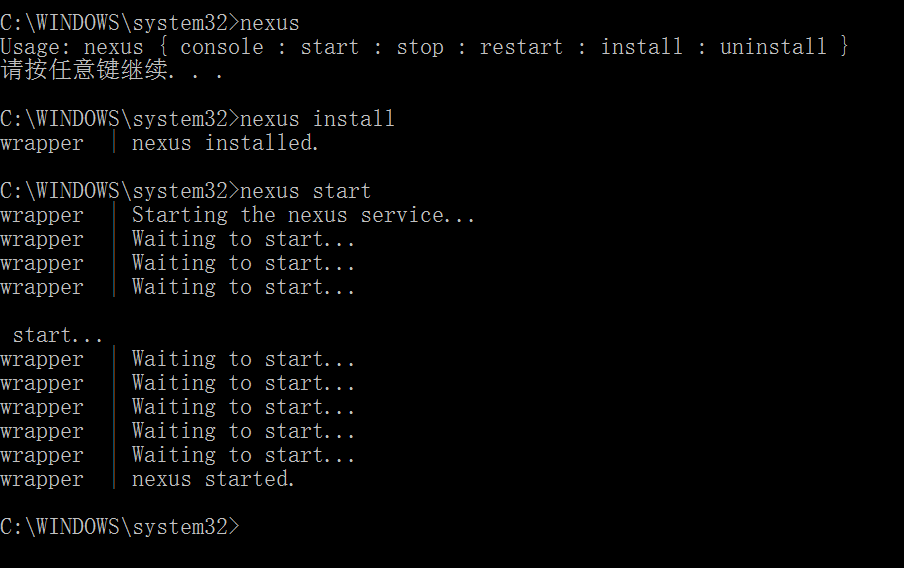
然后在浏览器中输入网址：
http://localhost:8081/nexus/
就进入了nexus的主页
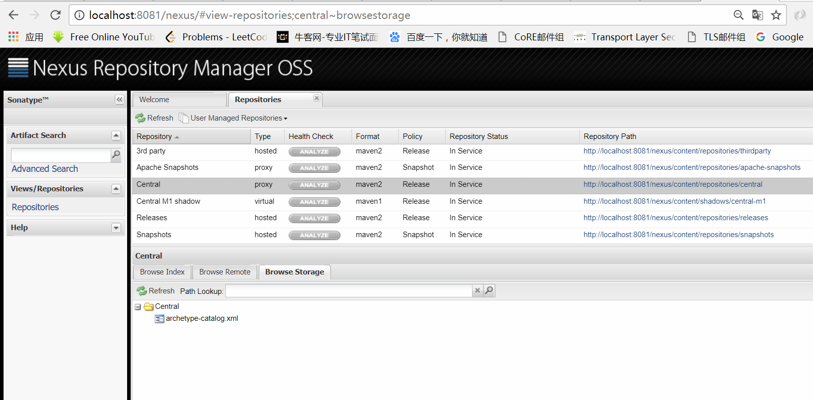
上面在点击了左侧的Repositories之后，就会看到所有的工厂。
我们登录进去（账号是admin，密码是admin123），就可以对工厂进行设置
nexus的配置
7.1 工厂类型
我们发现工厂有三种类型：
host的仓库、proxy的仓库和group仓库
1、host的仓库。内部项目的发布仓库，建立在局域网内部
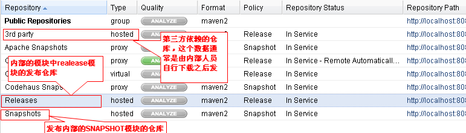
2、proxy的仓库。从远程中央仓库中寻找数据的仓库。也就是说，从外网下载的内容，都会放置到proxy仓库中：
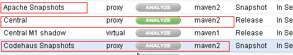
3、group仓库。组仓库用来方便开发人员进行设置的仓库
举个例子，我们比方下载依赖时候，不想让pom去中央工厂下载，而是想让它去私有工厂下载，可以在pom中这样配置：
我们想配多个工厂，就要在pom.xml配置文件中添加多个工厂，那么这样就会很麻烦，所以group工厂就应运而生：
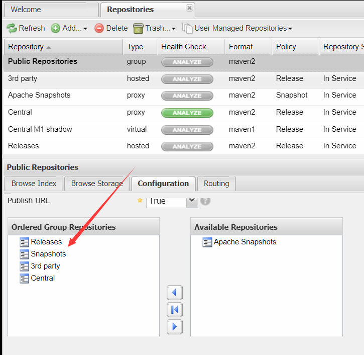
我们可以在group工厂中添加一组工厂，现在我们这个group中包括了四个工厂，有Releases、Snapshots、3rd party、Central这四个，所以再配置的时候，我们直接把group工厂的url配置到pom.xml就可以了。
然后我们做一个测试，就是找一个现在工厂没有的jar包，添加到pom.xml中，比如jetty:
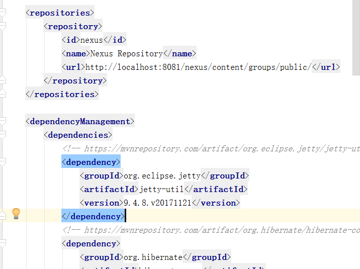
然后在user-service中也添加一份依赖。这样我们再到nexus网页中查看，发现Central工厂中多了jetty的包，如下所示：
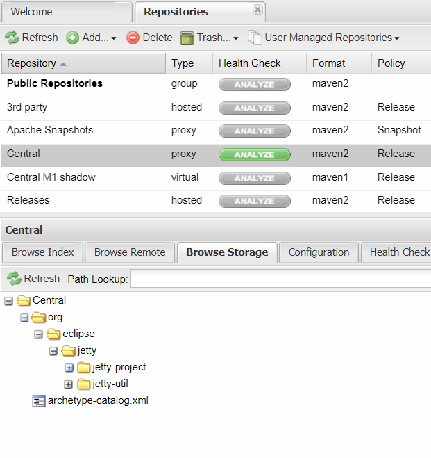
说明jetty已经下载到本地的工厂中了。
但是我们考虑一个问题，当前我们只是在user这个大项目中都继承了parent模块，在这里设置了私服工厂，但是如果我们换了一个项目，就还得再配置一次pom.xml，才能将依赖都自动去nexus中找。那么怎么样才能实现这个需求？
解决办法如下：
首先我们在user-parent的pom.xml中的repositories中打开对于releases和snapshot的激活：
另外我们需要在maven的settings.xml中打开对于profile的激活（每一个profile就是一份配置）：
这样设置好之后，我们去user-parent和user-service中的pom.xml中加一个依赖：
我们再次刷新nexus管理页面的Central仓库，发现jetty-plus已经被下载进去了：
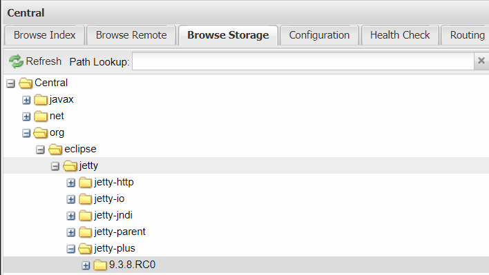
如果我们执行了nexus stop去停止nexus私服，再去下载一个不存在下的包（直接加到user-service中）：
它首先是到nexus的Central工厂中去下载，发现nexus已经关闭了，就去中央工厂去下载（在D:\Program Files\apache-maven-3.0.5\lib\maven-model-builder-3.0.5.jar\org\apache\maven\model\pom-4.0.0.xml中可以找到中央工厂位置），也就是http://repo.maven.apache.org/maven2里面进行下载。
现在如果想要做这么一件事：就是如果在内部工厂找不到，就不去中央工厂去找，也就是说，中央工厂只和私服打交道。
想实现这样的需求，就需要到maven的settings.xml中设置镜像（mirror）：
这样的话，所有的工厂都会通过nexus的group中包括的工厂来进行访问，如果nexus关闭了，也就不对外部中央工厂进行访问了。那么这个时候，前面设置的profile也就没有意义了，可以去掉对profile的激活，也就是删除下面一句：
我们还要注意，我们现在只是在镜像中把查找工厂的路径进行了修改，但是其他配置没有变，这个在maven的pom-4.0.0.xml中如此设置的：
如果我们想要开启snapshots，现在就需要把这个复制到maven的settings.xml中，并把snapshots打开：
发布项目到nexus中
8.1 项目的发布
我们已经研究了nexus各种工厂的类型，现在我们想把我们开发的maven项目发布到nexus工厂上，应该这么做：
在user-parent的pom中加入release工厂和snapshots工厂的配置：
123456789101112<distributionManagement><repository><id>user-release</id><name>user release resp</name><url>http://localhost:8081/nexus/content/repositories/releases/</url></repository><snapshotRepository><id>user-snapshots</id><name>user snapshots resp</name><url>http://localhost:8081/nexus/content/repositories/snapshots/</url></snapshotRepository></distributionManagement>在maven的conf下的settings.xml中加上服务器配置，也就是设定访问的权限：
123456789101112<servers><server><id>user-release</id><username>deployment</username><password>deployment123</password></server><server><id>user-snapshots</id><username>deployment</username><password>deployment123</password></server></servers>然后执行user-parent的deploy操作，操作完成后，再刷新snapshots工厂，发现我们的项目被成功的发布了上去：
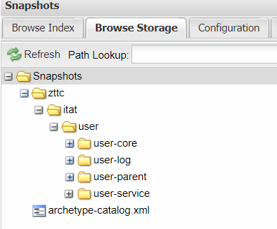
8.2 创建项目工厂和设置权限
试想一个场景，我们有很多人在一个公司开发，有的开发OA，有的开发CMS等等，如果项目都发布到snapshots和releases中，那么会臃肿不堪，那么怎么样才能更加合理地管理每个人的项目呢？
1、创建工厂
比如我们创建一个CMS工厂，那么第一步，就是先创建一个hosted工厂：
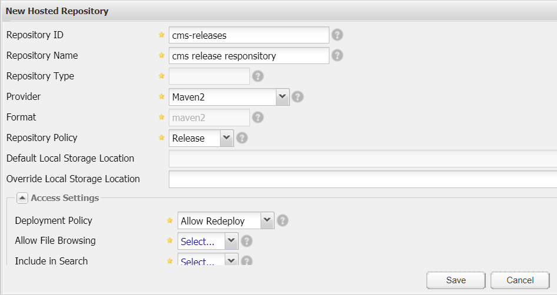
然后save，这样就创建好了一个releases的hosted工厂。
然后我们再创建一个cms的snapshots工厂：
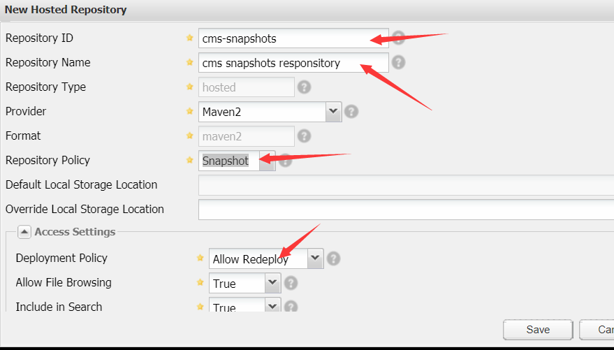
2、分配工厂
查看工厂的权限表：
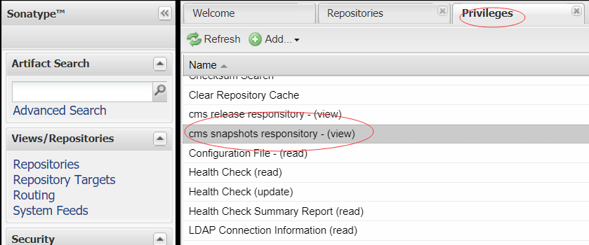
发现我们刚刚创建的两个工厂的权限都是查看权限
然后我们对两个工厂都添加权限：
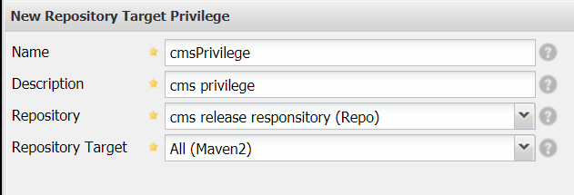
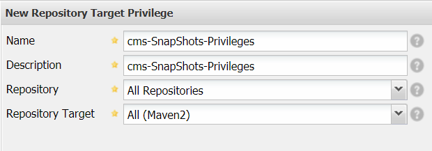
这样就给这两个工厂都添加了权限：
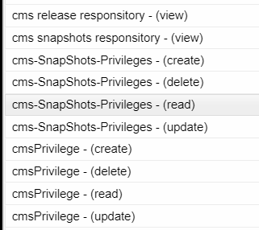
3、添加角色
添加过权限以后，我们要创建一个角色，让他可以拥有对cms的所有权限：
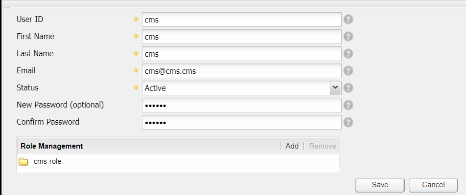
4、添加用户
创建一个cms用户，让他充当cms-role的角色（也就是拥有了cms-role的所有权限）：
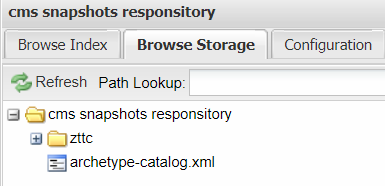
密码是cms123
5、发布项目
需要把user-parent中pom.xml的distributionManagement中的url修改一下：
然后把settings.xml中的用户名和密码修改成cms这个用户的：
执行clean、deploy以后，再刷新cms snapshots responsitory以后，发现成功发布：